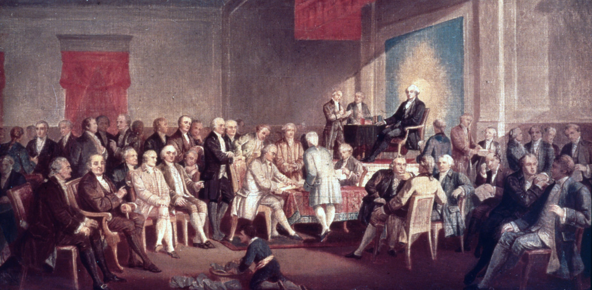
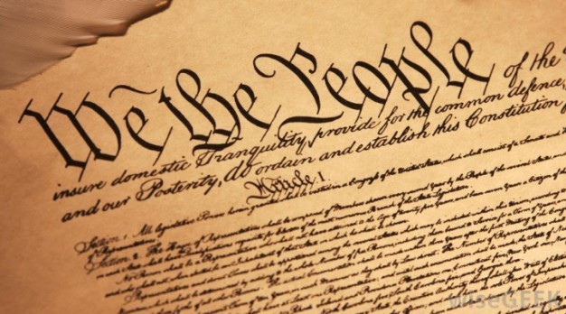
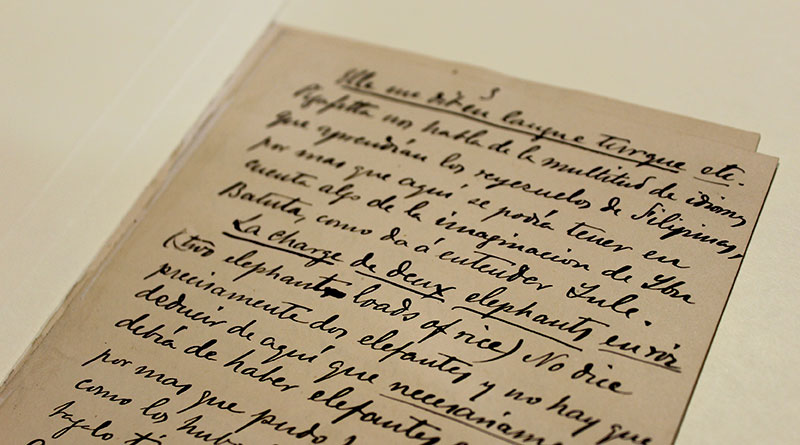
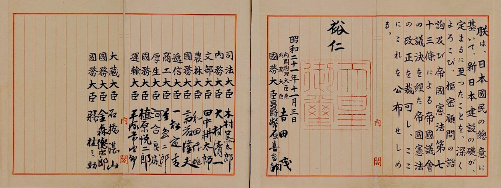
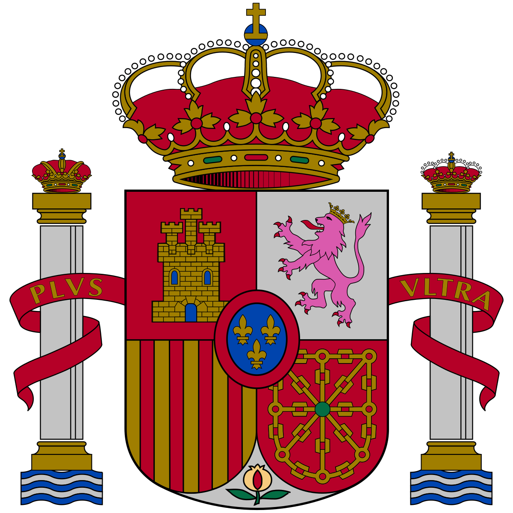
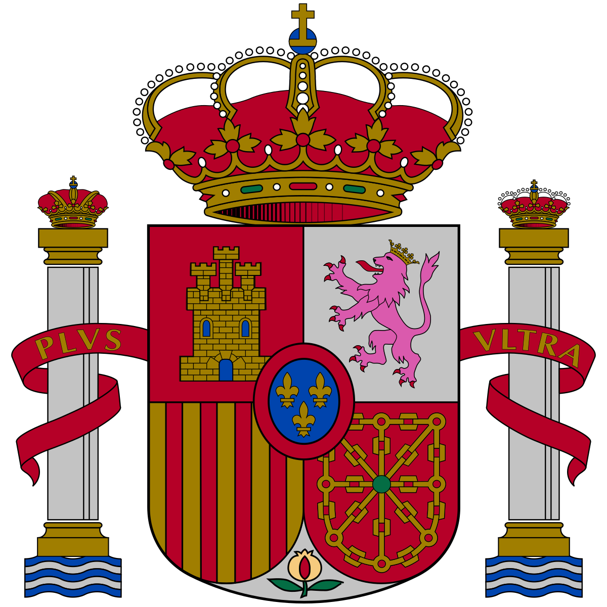

Readings in Philippine History
Different Constitution of Different Eras
Readings in Philippine History
American Era
The word pensionado originated with the Spanish language. It means to receive pension from the government. As the Pensionado Act started in 1903, the purpose was to "Educate and bind current and future Filipino leaders to the American colonial administration." Filipinos, mostly males, that were sponsored by the act were able to continue their education abroad and learn about American culture. The United States government agreed to having Filipinos in the United States to acquire knowledge on Western culture and civilization. This program encouraged Filipinos to obtain education in the United States and return to the Philippines. The first year of the program there were about 20,000 applicants with only one hundred of Filipinos men ultimately selected to study abroad in the United States. About forty boys and eight girls were chosen each year in 1904 and 1905. Students were spread across the United States to participate in higher education. ... The program, which ended in 1943 and sought to train future Philippine leaders in preparation for post-World War II independence, also fostered beliefs in the supremacy of U.S. institutions, language, and white culture as compared to traditional Philippine culture.
Spanish Era
Spanish Era
The written record of the Philippine Islands starts with the coming of the Spaniards. Not that the country had not had a history and a culture and a literature before! But the Spaniards, in their religious zeal, destroyed the earlier records as completely as possible. Therefore much of what is known about pre-Spanish days—and there is still much to be uncovered—comes from the records of other countries which were in touch with the islands. Centuries before the influence of the West was felt in the Philippines, the culture of India, China, and southeastern Asia had reached that country through the early settlers. From the eighth to the fifteenth centuries, the Philippine Islands were part of a great Hindu-Malayan empire ruled from Java and Sumatra in the neighboring islands to the southwest. Mohammedanism swept over this area of the world in the latter part of the fifteenth century. Moslems came into the Sulu Archipelago and Mindanao and converted the people. Their descendants, the Mores, have remained devout Mohammedans to this day. By the time the Spaniards came to the islands, therefore, the Filipinos had developed a way of life and a distinct culture that were suitable and satisfactory to them. They had a calendar, weights and measures, a system of writing, some elements of law, some religious ideas showing both Hindu and Mohammedan influences, and had some skill in metalworking, pottery making, and weaving. Magellan, on his voyage around the world, “discovered” the islands in 1521, nearly a half century before the first permanent settlement (St. Augustine, Florida) was established by Spain in the United States. Numerous other Spanish expeditions followed, and one of them gave to the islands the name “Las Filipinas” in honor of Philip II of Spain. The islanders were no match for the armed men from the West. They were divided both geographically and politically. Their government was a simple system, made up of many barangays (originally family groups each with a headman). There was little unity among these clans. By the end of the sixteenth century, most of the country except the southern islands had been conquered. The subject peoples were converted to the Catholic faith and for the next three hundred years came under the direct rule of Spanish governors and the all-pervading influence of Spanish priests.
January 23, 2013 marks the 114th Anniversary of the First Republic of the Philippines that was inaugurated in Malolos, Bulacan. It also marks the anniversary of the start of the Presidency of Emilio Aguinaldo, the first President of the Philippines. The Malolos Republic was the culmination of the Philippine Revolution, which began with the Katipunan and led to the creation of the First Constitution and Republican Government of Asia. To commemorate this, President Benigno S. Aquino III, by virtue of Proclamation No. 533, s. 2013, declared January 23 of every year as “Araw ng Republikang Filipino, 1899.” The First Republic traces its origins to the Revolution of 1896, which began under the leadership of the Katipunan, a secret society with a structure patterned after Freemasonry, and which aimed to attain independence for the Philippines. It was led by the President of the Supreme Council; the most well-known of whom was Andres Bonifacio. The Katipunan had members in Manila and other provinces in the Philippines. Due to political and other differences between the members from Manila and other provinces, divisions arose in the organization, prompting its leaders to call for a convention to try and reunify the society. On March 22, 1897 the Tejeros Convention was held in order to reconcile the differences between the two factions of the Katipunan: the Magdalo, which viewed Emilio Aguinaldo y Famy as its leader, and the Magdiwang, which gravitated towards Andres Bonifacio. The outcome was a decision that the Katipunan should be dissolved and a revolutionary government established. Elections were held for its officers: Emilio Aguinaldo was elected President and Andres Bonifacio, the former leader of the Katipunan, was elected Director of the Interior. Initially, Bonifacio accepted his position, but was insulted when Daniel Tirona objected. Bonifacio declared the proceedings of the Tejeros Convention null and void and established a new government. This was seen as an act of treason by the others and Bonifacio was charged with refusing to recognize newly established Revolutionary Government. He was arrested and sentenced to death in Maragondon, Cavite.
THE 1943 CONSTITUTION
(During the Japanese Occupation)
The 1943 Constitution was the constitution of the Japanese-sponsored Second Republic of the Philippines (1943-1945). It was recognized as legitimate and binding only in Japanese-controlled areas of the Philippines but was ignored by the United States government and the Philippine Commonwealth government in-exile.
June 1943, the Preparatory Commission for Philippine Independence (PCPI), composed of 20 delegates, was created to draft a new constitution by the Kalibapi [Kapisanan sa Paglilingkod sa Bagong Pilipinas], the only political organization allowed at that time. The Japanese monitored the drafting of the constitution and instructed the members of PCPI, led by Jose P. Laurel, that the constitution should conform with the principles of the Greater East Asia Co-Prosperity Sphere.
September 1943, the draft constitution was unanimously approved by all members of the PCPI and was submitted for ratification in a popular convention of the Kalibapi in Manila.
The 1943 Constitution of the Republic of the Philippines, composed of a preamble and twelve articles, creates a Republican state with a powerful executive branch and subordinate legislative and judicial branches. The executive power is vested in the President, who is to be elected by the members of the National Assembly from among themselves. The President is the head of government, and commander-in-chief of the Armed Forces.
powers of the President are: to veto any bill of the Assembly, to promulgate regulations when the Assembly is not in session and in times of war or national emergency, to declare martial law, to suspend the privilege of the writ of habeas corpus, and to appoint the members of the Council of State and officials of the local government. A limited legislative power is exercised by the unicameral National Assembly whose members, like the President, are not directly elected by the people. Rather, the Assembly is to be composed of representatives from each province elected in Kalibapi conventions throughout the country with appointed governors and mayors as ex-officio members.
The judicial power is exercised by the Supreme Court whose justices, together with judges of lower courts, are to be appointed by the President. The 1943 Constitution enumerates the duties and rights of the citizens, requires the government to develop Tagalog as the national language, and stipulates that one year after the termination of the Great East Asia War or the World War II; a new constitution shall be formulated and adopted to replace this Constitution.
Japanese Era
Philippine Constitution
Public System of Education
Pensionado Act
Education became a very important issue for the United States colonial government, since it allowed it to spread their cultural values, particularly the English language, to the Filipino people. Instruction in English language, and American history, lead to forming of a national identity and Filipino nationalism. Every child from age 7 was required to register in schools located in their own town or province. The students were given free school materials. There were three levels of education during the American period. The "elementary" level consisted of four primary years and 3 intermediate years. The "secondary" or high school level consisted of four years; and the third was the "college" or tertiary level. Religion was not part of the curriculum of the schools as it had been during the Spanish period. In some cases those students who excelled academically were sent to the U.S. to continue their studies and to become experts in their desired fields or professions. They were called "scholars" and "pensionados" because the government covered all their expenses. In return, they were to teach or work in government offices after they finished their studies. Some examples of these successful Filipino scholars were Judge José Abad Santos, Francisco Benitez, Dr. Honoria Acosta-Sison and Francisco Delgado. Many elementary and secondary schools from the Spanish era were recycled and new ones were opened in cities and provinces, among which there were normal, vocational, agricultural, and business schools. Among the most important colleges during American rule were: Philippine Normal School in 1901 (now Philippine Normal University) and other normal schools throughout the country such as Colegio Filipino (1900, now National University), Silliman Institute (1901, now Silliman University, Iloilo Normal School (1902, now West Visayas State University), Cebu Normal School (1902, now Cebu Normal University), Negros Oriental High School (1902), Capiz Home School (1904, now Filamer Christian University, the Echague Farm School (1918, now the Isabela State University) St. Paul College of Dumaguete (1904, now St. Paul University Dumaguete), Zamboanga Normal School in 1904 (now Western Mindanao State University), Jaro Industrial School (1905, now Central Philippine University), Instituto de Manila (1913, now University of Manila), Philippine Women's College (1919, now Philippine Women's University), and Institute of Accountancy (1928, now Far Eastern University. Examples of vocational schools are: the Philippine Nautical School, Manila Trade School (1901, now Technological University of the Philippines) and the Central Luzon Agriculture School. The University of the Philippines was also founded in 1908. Schools were also built in remote areas like Sulu, Mindanao, and the Mountain Provinces, where attention was given to vocational and health practice.
The Philippines had long been used as a trading port in Asia, and this
led to their colonization by the Spanish and later by the Americans. The
Spanish converted most of the population to Catholicism and the religion
remains the dominant one in the country. During the later part of more
than 300 years of Spanish rule, nationalist sentiment began to grow
among groups of Indios (which was how the Spanish referred to the
Filipinos), fuelled in large measure by the writings of national hero
Jose Rizal (later executed by the Spanish authorities) and other
ilustrados (the Filipino intellegensia). A revolution was launched
against Spain and the revolutionaries declared Philippine independence
in Kawit, Cavite on June 12, 1898. What became known as the Malolos
Congress was convened on September 15, 1898 and the first Philippine
Constitution, called the Malolos Constitution, was approved on January
20, 1899, ushering what is called the First Philippine Republic. In the
Spanish-American War of 1898, the revolutionaries sided with the
Americans, hoping that, with the defeat of Spain, independence would be
granted by the US to the Philippines. This, however, did not happen.
After Spain ceded (or sold) the islands to the United States in the
Treaty of Paris, the US immediately proceeded to brutally suppress the
Philippine independence movement.
1916, the US passed the Jones Act which specified that independence
would only be granted upon the formation of a stable democratic
government modelled on the American model, not the French model as the
previous constitution had been. The US approved a ten-year transition
plan in 1934 and drafted a new constitution in 1935. World War II and
the Japanese invasion on December 8, 1941, however, interrupted that
plan. After heroic Filipino resistance against overwhelming odds finally
ended with the fall of Bataan and Corregidor in 1942, a Japanese
“republic” was established, in reality, a period of military rule by the
Japanese Imperial Army. A new constitution was ratified in 1943 by
Filipino collaborators who were called the Kapisanan sa Paglilingkod ng
Bagong Pilipinas (Kalibapi). An active guerilla movement continued to
resist the Japanese occupation. The Japanese forces were finally
defeated by the Allies in 1944 and this sorry chapter came to a close.
Philippine independence was eventually achieved on July 4, 1946.
The 1935 Constitution, which featured a political system virtually
identical to the American one, became operative. The system called for a
President to be elected at large for a 4-year term (subject to one
re-election), a bicameral Congress, and an independent Judiciary.
: The Constitution of the Philippines Under Different Countries Regime
About:
by Banate and Cabural Corp. © 2022 ™
Rohana Banate
Czar Von Louie Cabural
Readings in Philippine History

 


Updated: 11/12/2022